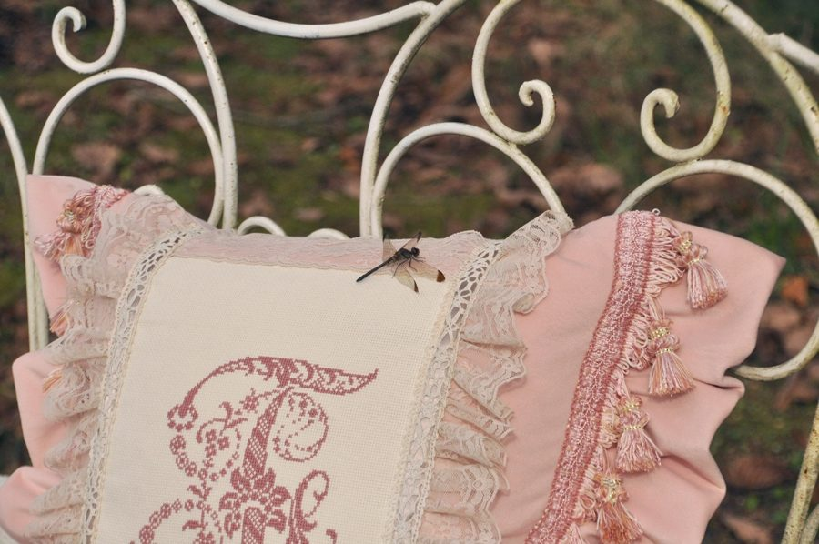
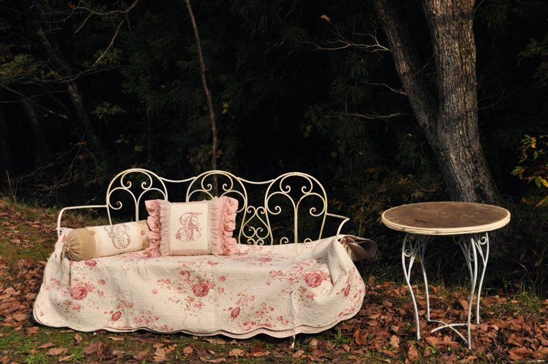
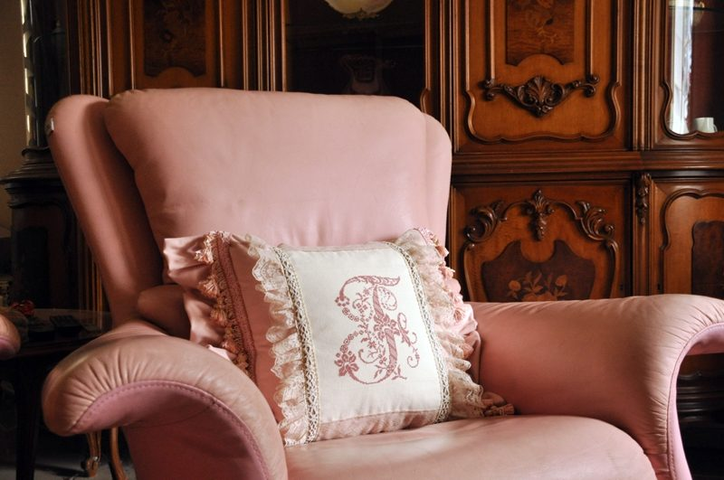

イニシャル「F」でクッション

クロスステッチし終えたイニシャル「F」でクッションをハンドメイドしました。
中素材は正方形の羽毛フェザーのヌードクッションを使っています。
長いこと新品のまま放置していましたが、やっと出番が訪れました〜。
やっぱり羽毛はふかふかしていて触り心地が気持ちいいです。
表の素材は、ほっこりと柔らかなベルベット調のピンクの布地に
縦長の「F」の刺繍に合わせレースとタッセルブレードとフリルを縦にレイアウト。

くすんだピンクのアンティークレースの上にトーションレースをかぶせます。
そしてその中にサテンリボンを通してレースの端を目隠し。

取り寄せたタッセルブレード。色は最高にマッチして満足でしたが・・・
どうしてもゴールドのコードが気になって、悩んだ末に取り除くことにしました。
ミシンがけされているのでコードをすくってハサミで切ってから、
小さな毛抜きで一つひとつ丁寧に抜いていく根気の要る作業です。
付け足す作業は簡単なのですが、引く作業は本当に手間がかかるものです。
しかも、かなりの力が必要。か弱くなくて良かったゎ（笑）。
ちょっとの苦労の甲斐あって、ゴールドのコードを取り除いたら上品になりました。

平凡な四角いクッションでも両サイドにフリルとタッセルブレードをつけることで、
ありふれていないクッションに仕上がりました。
先月、ハンドメイドしたイニシャル「C」のクッションと並べたら
色と形が違ってもテイストが同じなので、しっくり馴染んでくれました。

ちょっぴり洋書に出てくる写真のような雰囲気・・・。
今日は風が吹くたびにハラリハラリと落ち葉が舞っていました。
カサカサと枯れ葉が音をたてるのを聞きながらカメラを構えました。

クッションはお気に入りのピンクのソファに色もサイズもお似合いです。
ハンドメイドは手間も時間もかかりますが、完成したときには達成感があります。
作っている間、やっぱり手仕事が好きだなって実感しました。
また、ハンドメイドしたいなって思っています。